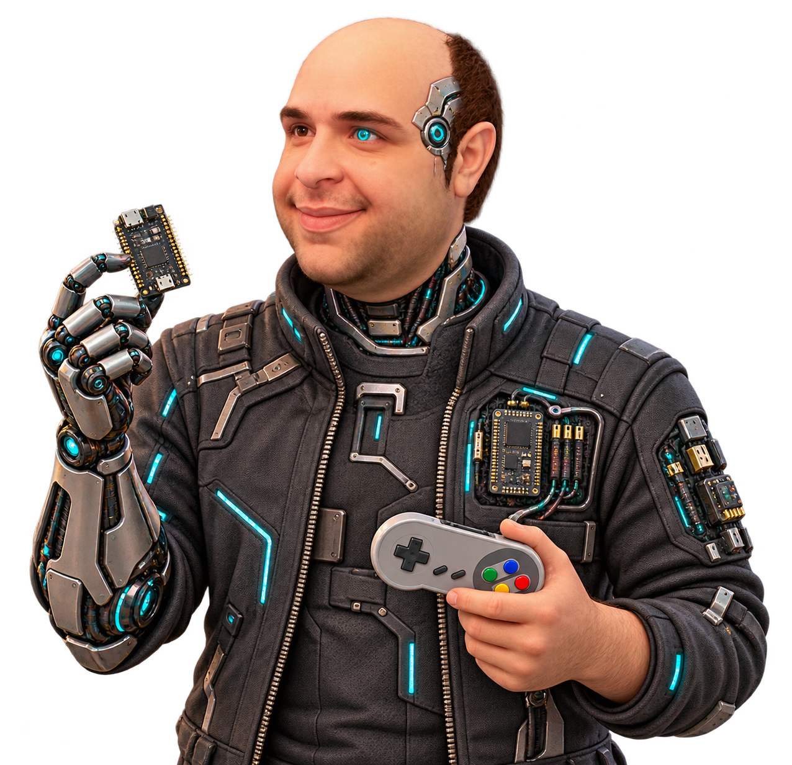

Ideas in orbit
Project Galaxy
Exploring the connections between research, engineering and play. Discover projects across intelligent systems, interactive worlds and experimental hardware.
- Artificial Intelligence
- XR
- Robotics
- Embedded Systems
- Games

Research · Development · ExperimentationScroll to explore on smaller screens